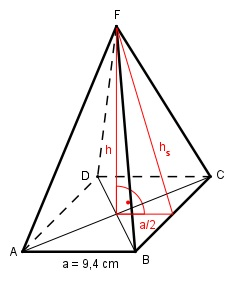

Aufgabe 189 Eine quadratische Pyramide hat eine Grundseite a von 9,4 cm und eine Oberfläche O von 291,4 cm². Wie groß ist ihr Volumen V?  Oberfläche O = Grundfläche G + Mantelfläche M O = G + M |-G M = O - G G = a² = 9,4² cm² = 88,36 cm² M = 291,4 cm² - 88,36 cm² = 203,04 cm² a * hs Mantelfläche M = 4 * -------- 2 M = 2 * a * hs |:2*a M ------- = hs 2 * a 203,04 cm² hs = -------------- = 10,8 cm 2 * 9,4 cm Satz von Pythagoras im roten Dreieck: hs² = h² + (a/2)² |-(a/2)² h² = hs² - (a/2)² h² = 10,8² cm² - 4,7² cm² h² = 116,64 cm² - 22,09 cm² = 94,55 cm² |√ h = 9,7 cm a² * h 9,4² cm² * 9,7 cm V = -------- = --------------------- = 285,7 cm³ 3 3